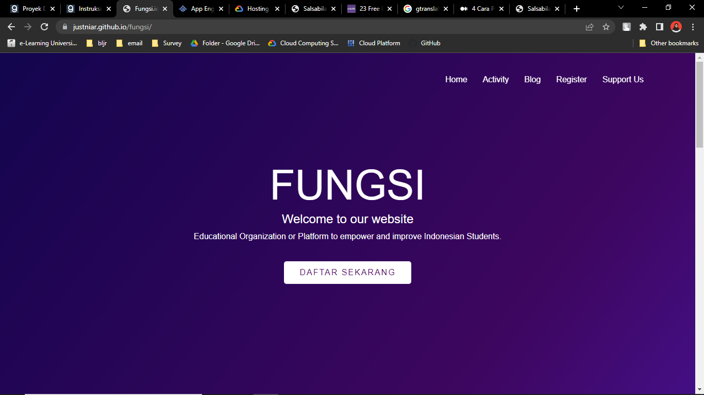
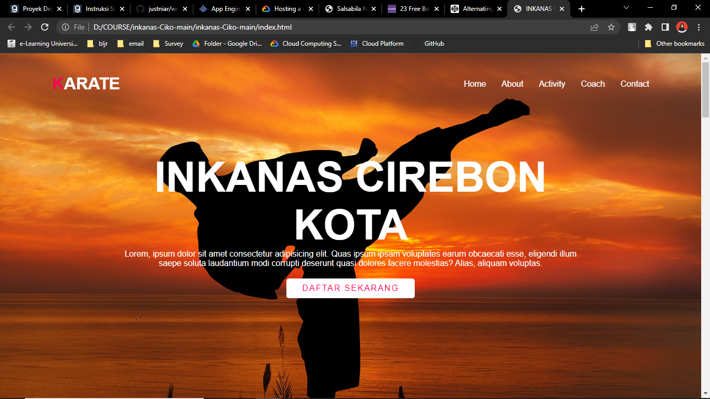
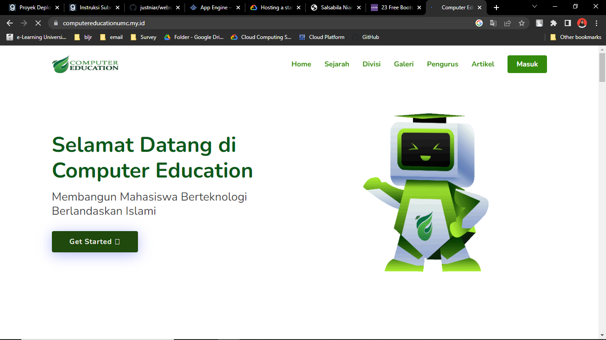
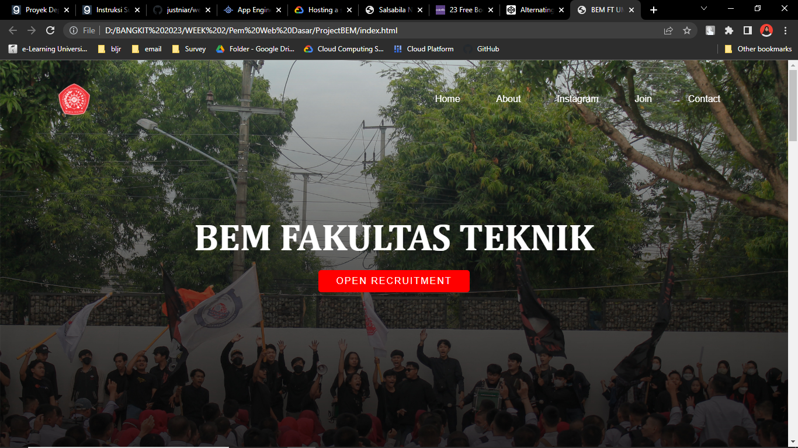

About Me!
As an Informatics Engineering student with basic graphic design skills and Cloud Computing Cohort of Bangkit Academy, I accustomed to applying computational thinking in problem solving, and dedicated myself to leveraging technology to drive innovation and solve complex problems. With a strong foundation in informatics engineering principles, I have developed expertise in programming, database management, and systems analysis.
As part of the Cloud Computing cohort at Bangkit Academy, I have gained hands-on experience working with leading cloud platforms such as Google Cloud, to develop scalable and secure solutions. Collaborating with diverse teams in cloud-based projects that align with business requirements and industry best practices. Committed to continuous learning, I actively pursue opportunities to enhance my skill set. I stay updated with the latest advancements in informatics engineering and cloud computing through online courses and certifications.
I thrive in dynamic and challenging environments, where I can apply my problem-solving skills and adaptability to deliver high-quality results. With a passion for innovation and a drive for excellence, I am eager to contribute to organizations that embrace the transformative power of cloud technologies.
My Project!

Fungsi.id
This is an organization of student associations from universities in Indonesia. here we provide free mentoring to them to form good character for them, and also we provide free tutoring to help them prepare for UTBK.
Deployed website Github Link

Project Inkanas Ciko
This is a website project of Karate Dojo "Inkanas Cirebon Kota
Deployed website Github Link

Computer Education
This is a website project of Computer Education. Created to publish student activity named computer education
Deployed website Github Link

BEM FT UMC
This is a landing page project of BEM Fakultas Teknik Universitas Muhammdiyah Cirebon. Created to assigned Dicoding final project on course entitled "Pemograman Web Dasar".
Deployed websites Github Link